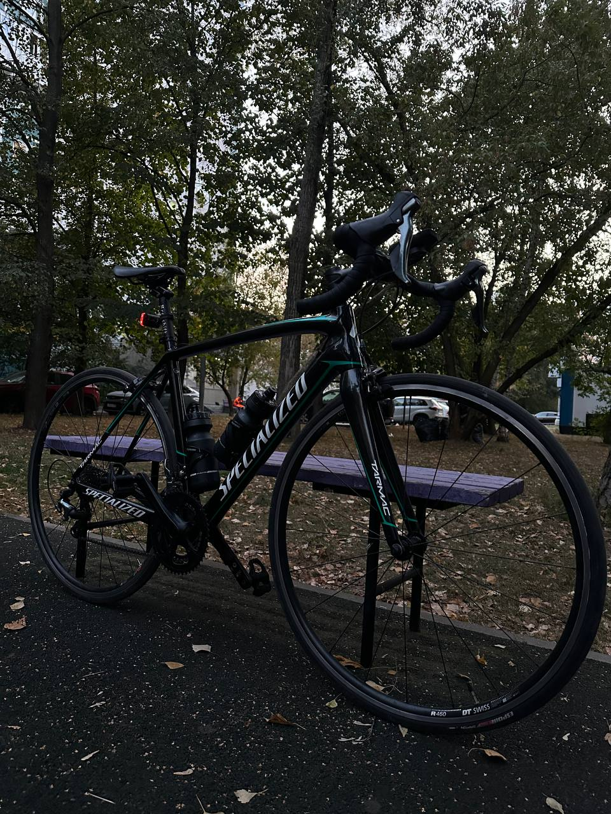
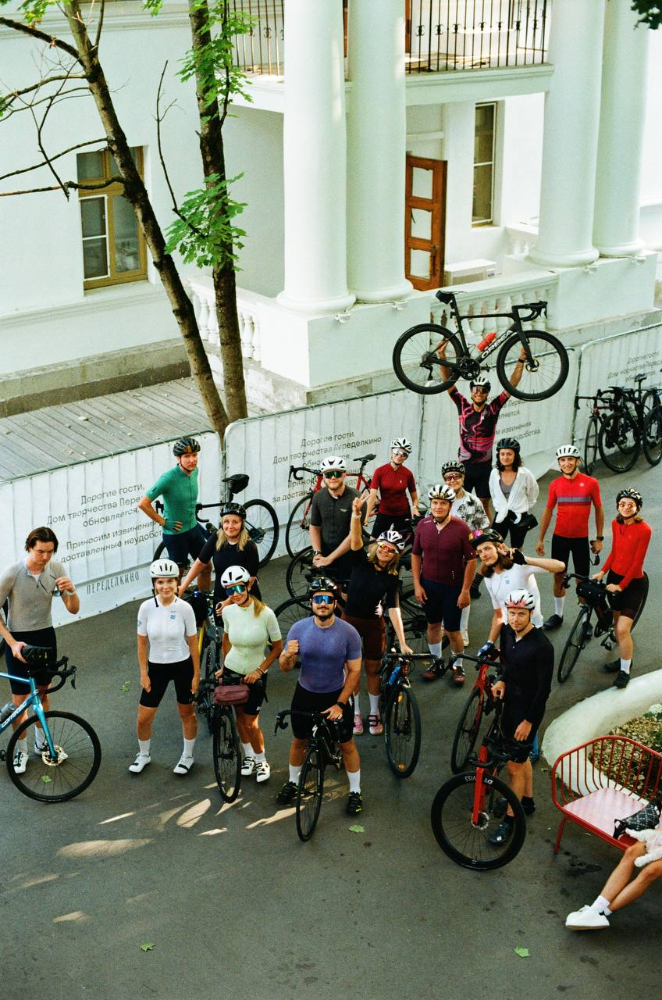
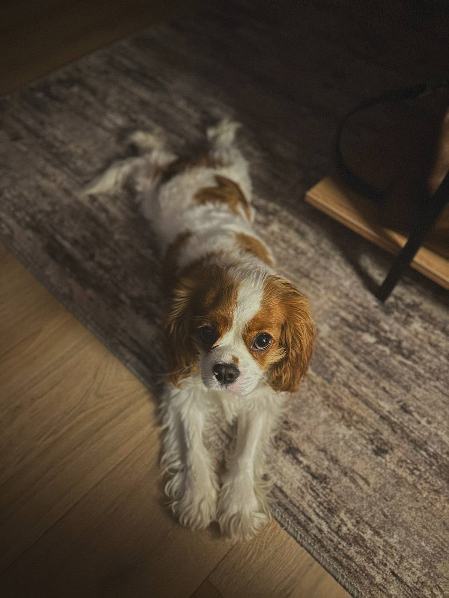

Привет,
я Александр Нестерюк
Один из первых в России начал строить контент-заводы. 200+ млн просмотров. 50 000+ роликов. Тогда это ещё так не называлось.
Проекты
ROCO Coffee
Вывел кофейный бренд на Wildberries: Telegram с 0 до 8.6K, 50+ блогеров, 200K+ переходов, рост активных ×3.
Подробнее →Privery
Построил контент-завод: 33 420 роликов за 55 дней, 100+ млн просмотров, команда 130+ человек.
Подробнее →SKIFMUSIC
Первые в музыкальной индустрии начали строить контент-заводы. Серебряная кнопка, 74 млн просмотров, рост сети с 3 до 35 магазинов.
Подробнее →Что умею
А это просто я
Привет! Я Александр.
Строю контент-заводы. Первый запустил в SKIFMUSIC в 2020 году — тогда это ещё так не называлось. Сейчас это тренд, а тогда просто нужно было сделать так, чтобы работало.
За это время: 200+ млн просмотров, 50 000+ роликов, серебряная кнопка YouTube, команды до 130 человек.
Живу в Москве. Работаю с теми, кому нужен результат в цифрах.
🧵 Кожевенное дело
Шью кожаные сумки. Одну ношу сам — на фото выше.
🚴 Велосипед
Катаю на шоссейном велосипеде. Рекорд — 130 км за день. Велосипед, кстати, цел, я — не очень.


🐕 Грейс
Дрессирую Грейс. Она знает 20 команд, но больше любит мяч. И меня.
